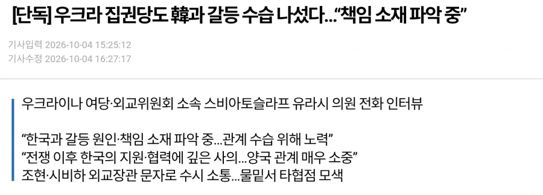

요약 :
아니 우리도 대통령이 그렇게 말할 줄 몰랐지;;

요약 :
아니 우리도 대통령이 그렇게 말할 줄 몰랐지;;
느금마
책임ㅋㅋㅋㅋㅋ소재 ㅋㅋㅋㅋㅋㅋㅋㅋ
저거도 쑈임
아. 야당이 아니고 여당?
저런건 집권당이 하는게 맞지 ...
쟤네가 뭐라건 정치적으로 지원 불가임
주면 종전 후에 러시아랑 척지는 거라
우크라 지원해도
러시아랑 척 질 일 없고 나중에 거래할 수 있고
지금 러시아도 그지새기임
앵.. 그런 논리면 러북 상호방위조약 맺고 서로 지원하고 있으니 우리측에서 러시아 거절해야 되는거 아님?
사실 그러고는 싶지만 "북한편드는 씹새끼야"보다는 "저새끼랑 놀지말고 나랑 사업이나 하자"가 더 나으니까
지원 하고 말고랑 후에 무역에 영향은 미미 한게 국가 거래 임
무기 지원 했다고 거래 끊었으면 중국이랑 베트남은 우리랑 왜 무역 함?
일본은 중국 침략 하고도 나중에 무역 잘 함
러시아 지가 필요하면 부르는거고 안 필요 하면 우리가 러시아 지원 해도 거부 할거야
러시아가 당장 급해서 중국 빨고 있으나
전쟁 끝나면 당장 중국 거래 부터 줄일 걸?
자기들에게 위협이 되는데 가만 두겠음
그게 국제 관계 임
미미한 거 맞는지 아닌지 난 장담 못하겠음
그게 내 생각임
쇼인듯
뭔가 돌아돌아서라도 지원 받는게 있는거 아님?
아무것도 안받고 있으먼 내놓으라고 드러누울거 같은데
애초에 동남아보다도 후달리는 급안되는 새끼들이
저런식으로 겸상하려들고 한국 이용해서 쇼하는것부터가 쟤네는 이미 나가리임
러브젤렌스키와 put in 둘이서 사죄의 게이야스해라
니들 해외 대사관 새끼들도 병신이잖아.....
근데 우리랑 관계 복원되어도 어색한 사이잖어
야스쿠니 참배나 어떻게 하라고 해
진영논리 다 떠나서 종전후 매력적인 시장은 러시아맞음 레드팀 레드팀 거려도 중국이랑 경제 사회 교류하잖아 걍 뽑아먹을거 있으면 다먹어야함
하는 짓이 북한이 러시아 도왔으니 니네는 우리 도와야지 같은 거임?
국제 관계에서 니편 내편 거리는거 보니 개드립 수준이 보인다 보여
나만 여탕 찾아왔어?
책임 소재를 파악할 필요가 있나? 니네 대통령.